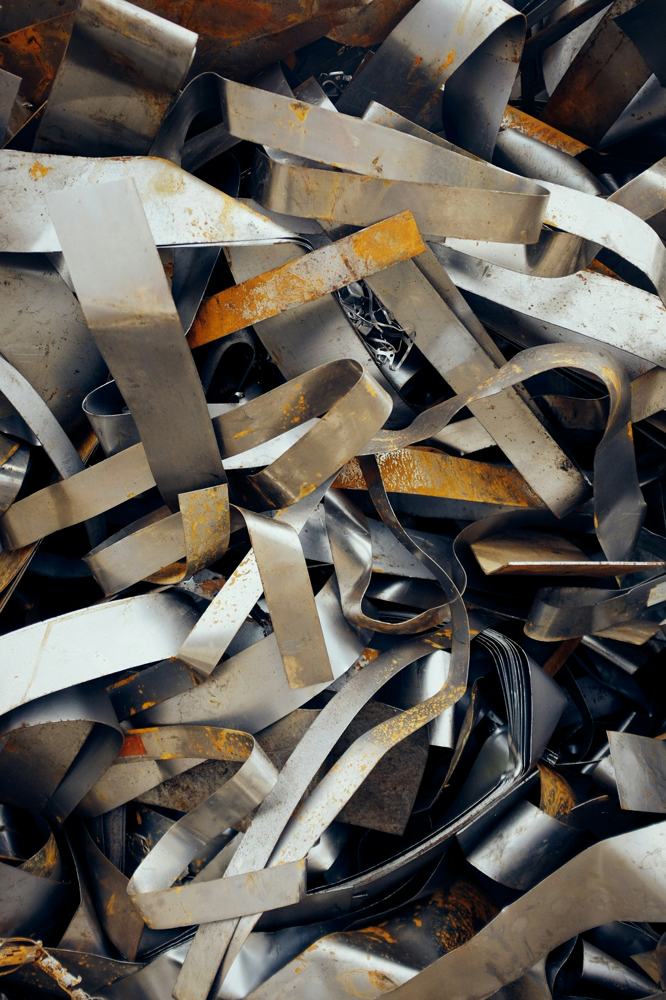
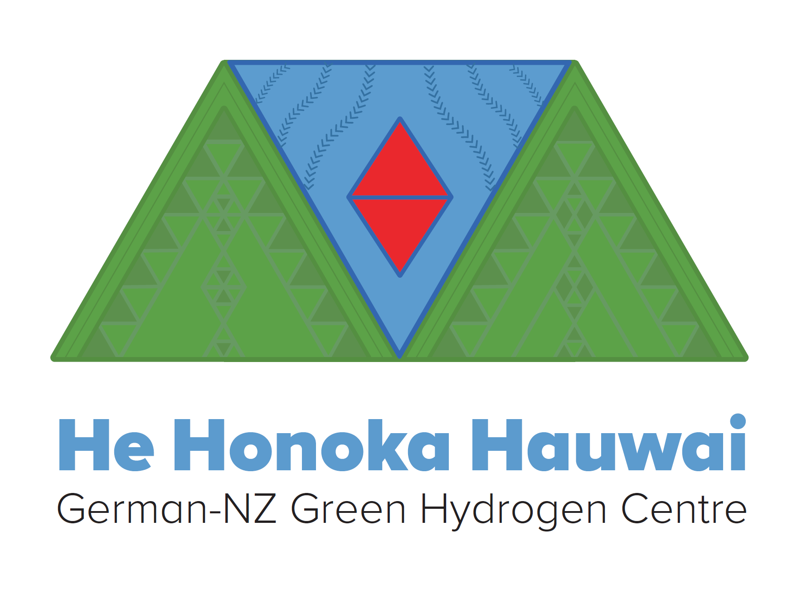
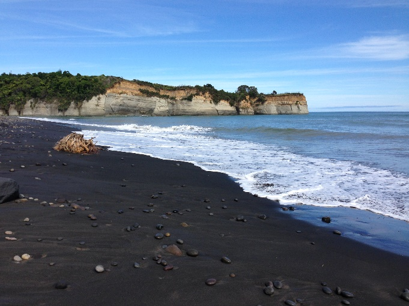
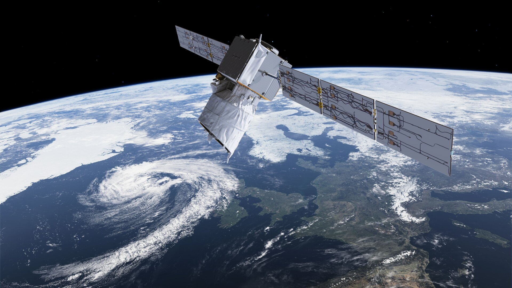

HydridVault
Jan 2026 – Feb 2027Portable metal hydride demonstrator
A portable metal hydride demonstrator tank for safe, low-pressure hydrogen storage.
Principal Investigator · BMBF (Germany) / MBIE (New Zealand)
Portable metal hydride demonstrator
A portable metal hydride demonstrator tank for safe, low-pressure hydrogen storage.
Principal Investigator · BMBF (Germany) / MBIE (New Zealand)

Sustainable, circular metal alloys for the efficient and safe storage of hydrogen in stationary applications.
Principal Investigator · BMBF (Germany) · 1.5 M€

German-NZ Green Hydrogen Centre
Bilateral German-New Zealand research centre for green hydrogen, jointly run by Hereon and the University of Otago.
Co-Leader · BMBF (Germany) / MBIE (New Zealand) · 760 k€

TiFe from NZ Resources
Generating hydrogen storage materials from New Zealand ilmenite and iron sand resources.
Coordinator · BMBF (Germany) · 400 k€ · grant 03SF0691

Atomistic study of metal hydride degradation under the conditions of long-term space operation.
PI · ESA
Third-party funding and fellowships acquired, 2.9 M€ in total.
Sustainable TiFe Generation from Secondary Sources
BMBF (Germany) · Federal funding · Principal Investigator
HIDA Visiting Researcher Grant (with S. Faouri)
Helmholtz Association · Helmholtz Information & Data Science Academy (HIDA) · Host
HIDA Visiting Researcher Grant (with A. Rowberg)
Helmholtz Association · Helmholtz Information & Data Science Academy (HIDA) · Host
Generating Hydrogen Storage Materials from New Zealand Resources
BMBF (Germany) · Federal funding · Coordinator
Establishing a German-New Zealand Research Centre for Green Hydrogen
BMBF (Germany) · Federal funding · Coordinator
HIDA Visiting Scientist Grant (with M. Selzer)
Helmholtz Association · Helmholtz Information & Data Science Academy (HIDA) · Fellow
Humboldt Return Fellowship
Alexander von Humboldt Foundation · Feodor Lynen Return Fellowship · Fellow
Computation of highly accurate interatomic potentials of heavy and superheavy elements
New Zealand eScience Infrastructure (NeSI) · HPC allocation · Principal Investigator
Hochpräzise quantenchemische Simulationen von atomaren und molekularen Phasen unter extremen Bedingungen
Alexander von Humboldt Foundation · Feodor Lynen Research Fellowship · Fellow